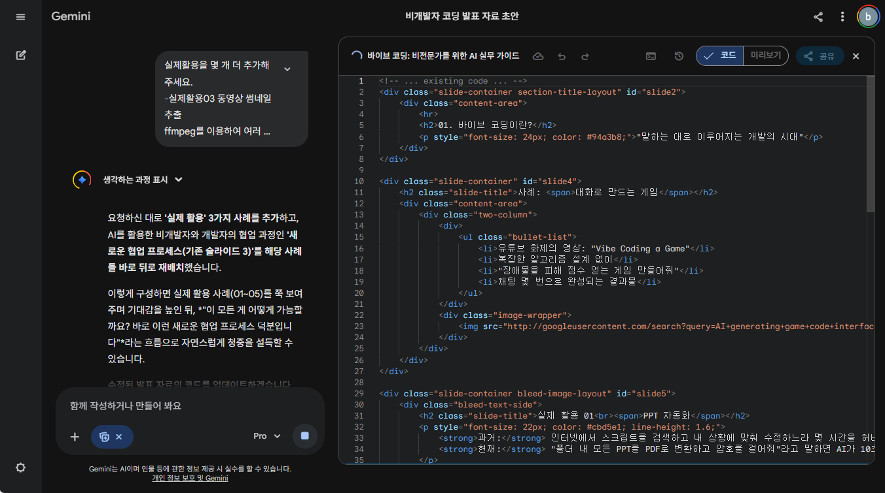
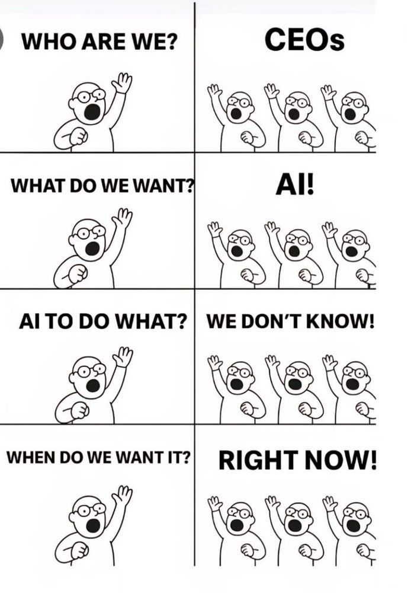

비개발자 팀장을 위한 실무 AI 활용 가이드
"말하는 대로 이루어지는 개발의 시대"
과거: 인터넷에서 스크립트를 검색하고 내 상황에 맞춰 수정하느라 몇 시간을 허비했습니다.
현재: "폴더 내 모든 PPT를 PDF로 변환하고 암호를 걸어줘"라고 말하면 AI가 10초 만에 코드를 완성합니다.

비개발자가 자연어로
비즈니스 로직과 요구사항을
AI에게 설명합니다.
LLM(대규모 언어 모델)이
제시된 아이디어를 바탕으로
즉시 실행 가능한 코드를 짭니다.
개발자는 생성된 코드의
데이터 구조를 검토하고
배포와 보안을 책임집니다.
• 처리량 한계로 답변 끊김 현상
• 구문별로 조각내어 사람이 수동 조립
• 최소한의 코딩 지식 필수
• 대용량 컨텍스트 처리 (한 번에 전체 코드)
• Cursor AI, VSCode+Codex 등 활용
• 타자만 칠 수 있으면 개발 가능

몇 달 전의 실패는
오늘의 성공이 될 수 있습니다.
코딩 지식이 아니라
논리적 타이핑이 핵심입니다.
기술은 우리가 상상하는 것보다
훨씬 빠르게 진보합니다.
현재 저는 VSCode + Codex + Supabase를 개인적으로 공부하고 있습니다.
비개발자가 이런 낯선 기술의 중심부에 관심을 갖게 만드는 것,
그것이 바로 AI가 우리에게 준 가장 큰 기회이자 역할이 아닐까 싶습니다.
궁금하신 점이 있다면 말씀해 주세요.